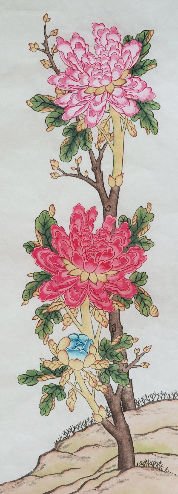
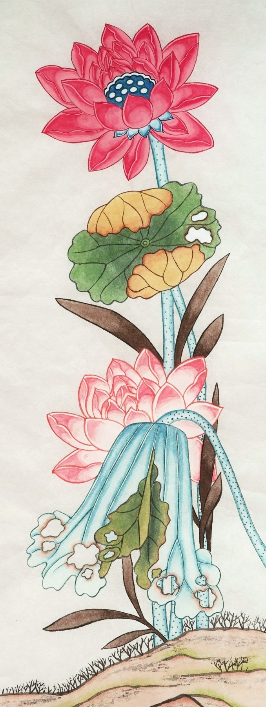
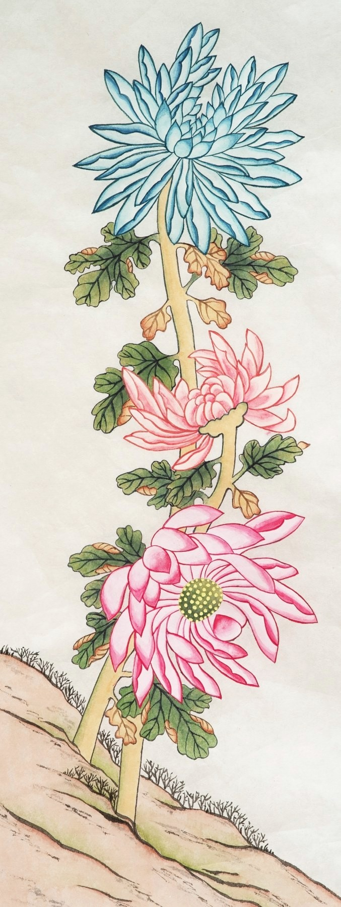
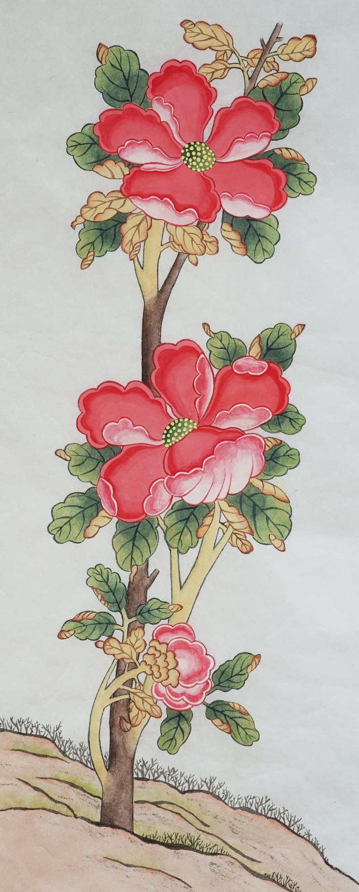

좁고 긴 네 폭이 나란히 이어집니다. 화면마다 꽃이 하나씩 피어 위아래로 뻗어 오릅니다.
모란은 봄을, 연꽃은 여름을, 국화는 가을을, 동백은 겨울을 맡았습니다. 네 폭을 나란히 걸면 한 해가 한 벽에 이어집니다.
모란은 부귀를, 연꽃은 맑은 인품을, 국화는 지조와 장수를, 동백은 겨울을 견디는 굳셈을 뜻합니다. 계절이 돌아오듯 집안의 기운도 끊이지 않기를 바라는 그림입니다.
이 작품 구입을 원하시면 갤러리 데스크로 말씀해 주세요.